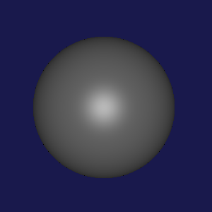
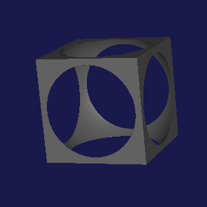
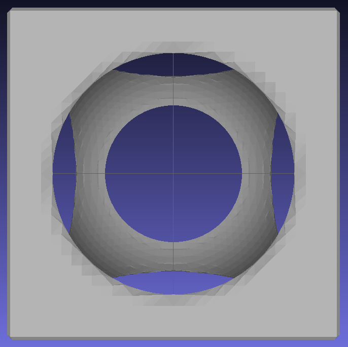
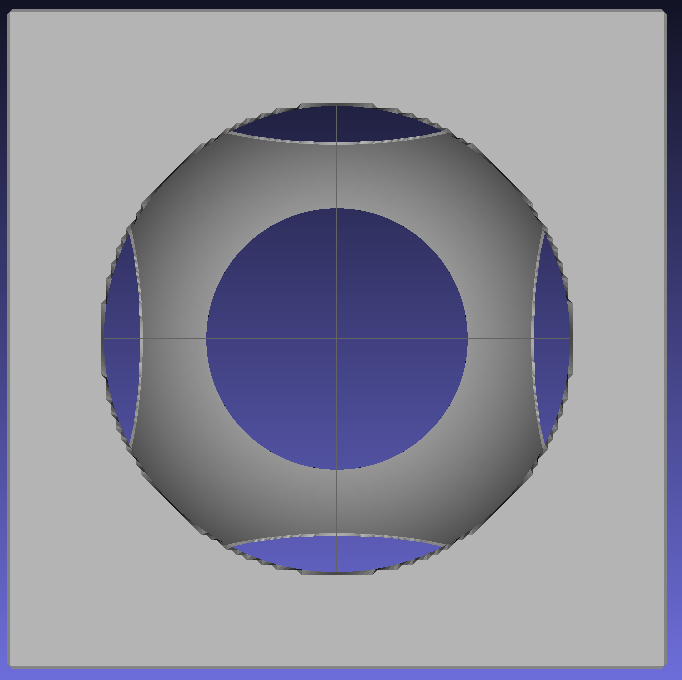

2 Getting Your Ruckus On
During your whirlwind tour, these margin notes will provide more details and background for readers who are interested. Or bored.
This is a whirlwind walkthrough of creating a simple Ruckus design. We’ll gloss over details and skip theory to give you a feel for how the tools feel in practice. The later sections in this document will fill in the gaps.
You should have completed the Prerequisites.
2.1 Writing a Design
Ruckus designs are stored as text files. Create a text file called sphere.rkt and enter:
Fun fact: Ruckus design files are actually valid programs written in a language called Racket. Racket is a language in the Lisp family, descended from Scheme.
#lang ruckus (sphere 200)
This defines a Ruckus design containing a sphere, with radius 200 units.
Save the file and display it using Ruckus’s interactive visualizer, viz/spheretrace.rkt:
ruckus-3d sphere.rkt
After a bit of churning, a window should pop up containing a little sphere, something like this:

In the visualizer, you can use a mouse wheel or scroll gesture to zoom in and out, and dragging will rotate the design. But we can’t tell it’s rotating yet, because it’s a sphere.
2.2 Combining Objects
Let’s alter the design with some simple constructive solid geometry: let’s subtract the sphere from a cube. Without exiting the visualizer, edit the design file to read as follows (parentheses matter!):
#lang ruckus (difference (cube 330) (sphere 200))
Switch back to the visualizer and press F5 to recompile the design. If you rotate the design by dragging the mouse, it should now look like this:

It’s now a cube with a sphere-shaped void inside. It would make a lovely desk trinket; let’s 3D print it.
2.3 Preparing for Printing
Ruckus has no particular opinion on how big a unit should be. If you’re more comfortable working in centimeters, or inches, go for it. You may need to specify the units later —
for example, the 2D outline exporter has a command line option. For 3D, common file formats leave the units implicit, so you’ll have to specify them in whatever tool loads your file.
To move a design into the real world, we need to decide how big one Ruckus
"unit" is. 3D printing software usually assumes that one design unit is one
millimeter, so let’s do that. Our current design would be 330mm across —
#lang ruckus (scale 1/10 (difference (cube 330) (sphere 200)))
Reload the design in the visualizer using F5. It got tiny, you may need to zoom in.
To send the shape to the printer, we need to extract the design’s surface in a format called STL, using Ruckus’s surface exporter. We’ll call the output file sphere.stl.
ruckus-export-surface sphere.rks sphere.stl
You can view the result in a tool such as MeshLab. It should look something like this:

2.4 Improving Export Quality
The coarseness of the surfaces in the image above is a phenomenon called aliasing. To save compute-time and reduce file size, Ruckus exports your design using 1-unit triangles by default. The -q flag adjusts this dimension, called the surface quantum. You probably don’t need to make it incredibly small, since many 3D printers don’t have great resolution beneath a millimeter anyway. Plus, each time you halve the quantum, processing time increases by 4x.
Notice that, while the design looks smooth and sharp in the visualizer, it now has slightly rounded corners and some visible artifacts. We can reduce this by adjusting the -q parameter:
ruckus-export-surface -q 0.25 sphere.rks sphere.stl
The exporter is much slower (16x slower to be exact), but the output is much prettier:

If you have enough CPU oomph available, or are just willing to wait, you can crank the quantum arbitrarily low. However, our 3D printer will probably not render quarter-millimeter features anyway.
We now have an STL file of our design suitable for printing!